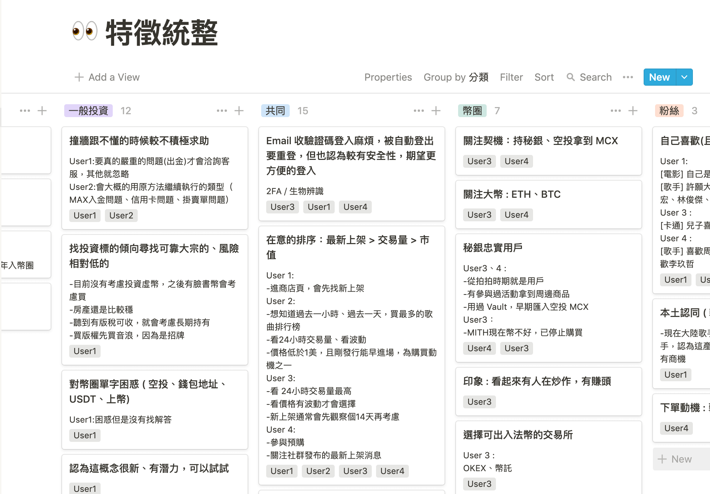

<!DOCTYPE html>
<html>
<head>
  <!-- Global site tag (gtag.js) - Google Analytics -->
<script async src="https://www.googletagmanager.com/gtag/js?id=UA-158081816-1"></script>
<script>
  window.dataLayer = window.dataLayer || [];
  function gtag(){dataLayer.push(arguments);}
  gtag('js', new Date());

  gtag('config', 'UA-158081816-1');
</script>

	<meta charset="utf-8">
	<meta http-equiv="X-UA-Compatible" content="IE=edge">
  <meta http-equiv="Content-Type" content="text/html; charset=utf-8">
  <meta name="viewport" content="width=device-width, initial-scale=1,maximum-scale=1">
  <link rel="shortcut icon" href="favicon.ico" type="image/x-icon">
  <title>Ying Ying - User Research</title>
  <!-- reset -->
  <link rel="stylesheet" href="stylesheets/minireset.min.css">
  <!-- 自訂 reset 基礎元件-->
  <link rel="stylesheet" type="text/css" href="stylesheets/reset_custom.css">
  <!-- 英文字型與色彩設定 -->
  <link href="https://fonts.googleapis.com/css?family=Gelasio:400,400i,500,500i,600,600i,700,700i&display=swap" rel="stylesheet">
  <!-- <link href="https://fonts.googleapis.com/css?family=Roboto+Mono|Rubik:300,400" rel="stylesheet"> -->
  <link rel="stylesheet" type="text/css" href="stylesheets/font_color.css">
  <link href="https://fonts.googleapis.com/css?family=Noto+Serif+TC:600,700" rel="stylesheet">
  <!-- menu -->
  <link rel="stylesheet" type="text/css" href="stylesheets/header.css">
  <link rel="stylesheet" href="stylesheets/videoLoad.css">
  <link rel="stylesheet" href="stylesheets/index.css">
  <link rel="stylesheet" href="stylesheets/intro_hero.css">
  <link rel="stylesheet" href="stylesheets/intro_cis.css">
  <link rel="stylesheet" href="https://unpkg.com/aos@next/dist/aos.css" >
  <!-- jquery -->
  <script src="https://ajax.googleapis.com/ajax/libs/jquery/3.2.1/jquery.min.js"></script>
</head>
<body>
  <div class="fullScreenBg research"></div>
  <h1 class="pageTitle font_superTitle">User Research</h1>
  <div class="sec_draw">
    <div>
        <h2 class="font_1_blue">可大可小，彈性的研究計畫</h2>  
        <p class="font_08_black">分別在 VoiceTube、HERO、Machi X 都參與過用戶研究，大小規模都有，以下會提兩個例子，綜合的心得文章我放在<a class="underline highlight" href="http://bit.ly/2OxgRKA" target="_blank">這裡</a>，還有許多的 Know-How 尚未寫出來，更多是我還沒實踐的待辦，我認為研究真的很有趣，不論是對產品本身，對團隊凝聚向心力、對用戶的同理心都是正面效果。</p> 
    </div> 
    <div class="aos-item" data-aos="fade-up" data-aos-easing="ease-out-cubic" data-aos-duration="1000">
      </div>   
  </div>
<div class="sec_intro_gray">
    <div class="aos-item" data-aos="fade-up" data-aos-easing="ease-out-cubic" data-aos-duration="2000">
            <h2 class="font_1_blue">用戶旅程圖</h2>
            <p class="font_08_black">很多時候，我們會覺得產品很有魅力，但這個魅力點的前後的痛點卻會讓用戶在感受甜蜜之前就離去，或是最後的敗點讓他忘卻了這份喜悅(?)，當時間有限我們不可能拯救一切，調整旅程順序、拆除弊大於利的環節，能夠幫助我們的用戶旅程走得更長、體驗更好。</p> 
    </div>    
</div>
<div style="width:100vw;text-align: center;">
   
</div>
<div class="column_list">
  
</div>


<div class="sec_intro_gray">
  <div class="aos-item" data-aos="fade-up" data-aos-easing="ease-out-cubic" data-aos-duration="2000">
          <h2 class="font_1_blue">人物誌</h2>
          <p class="font_08_black">比起訪問正與產品中熱戀的人，我們會訪問選擇了其他產品而沒有選擇我們，或是曾經用過現在不用的人，被用戶痛罵很爽（被虐傾向？），此外，除了常見的外在傾向（職業、年齡），內在傾向也是很重要，例如我們訪問英文非常好的組別、跟英文不好的組別，裡面卻會有重合的 Persona。都是過去對填鴨式教育有很深的陰霾，而在面對某些介面時心理反應是一樣的。
          </p> 
  </div>    
</div>
<div class="column_list">
    
    
    
</div>
<div class="sec_intro_gray">
  <div class="aos-item" data-aos="fade-up" data-aos-easing="ease-out-cubic" data-aos-duration="2000">
          <h2 class="font_1_blue">挑戰做「完全與自己不同族群的人」在用的產品</h2>
          <p class="font_08_black">踏入區塊鏈後，除了像高三考生一般瘋狂進補相關知識、試用競品，學習「幣圈生態」，跟著公關去聽音樂人的心聲尋找破口，甚至後期還接觸炒鞋、房地產買賣的人。在非常少量的資源下，接觸人們並快速的分析可能的來源組成，也和行銷實驗投放廣告的關鍵字組合，協助新創公司思考產品策略。</p>
  </div>    
</div>
<div class="column_list">
    
    
    
</div>
  
  
    <a href="index.html" class="btn_blue_m back">Back to List</a>
    <script src="https://unpkg.com/aos@next/dist/aos.js"></script>
    <script>
      AOS.init();
    </script>
</body>
</html>